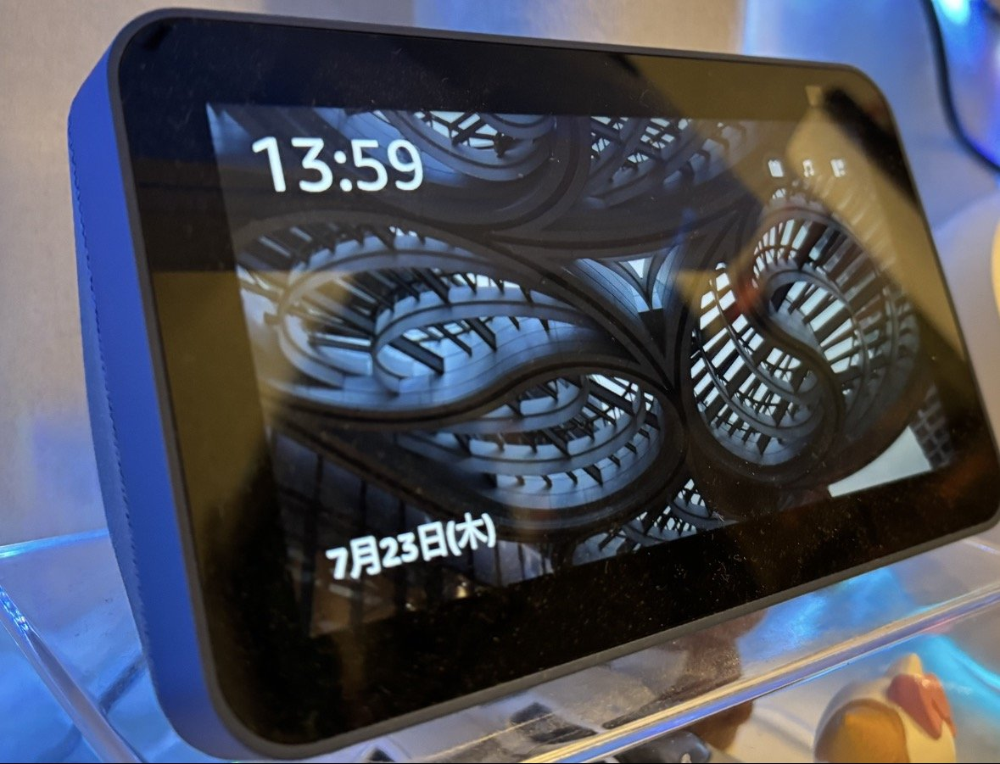

The Autopsy Report · Device #096
The Echo Show 5, 2nd Generation
Amazon's bedside smart display: a 5.5-inch screen, a camera with a physical shutter, and MediaTek silicon throughout. We haven't opened one — the FCC file and public records fill in the outline.
What is this thing?
The Echo Show 5 (2nd generation), model C76N8S, is Amazon's compact Alexa smart display: a 5.5-inch 960×480 touchscreen, a 2 MP camera with a physical shutter, and far-field microphones, built to sit on a nightstand and show you the weather, your calendar, and who's at the door. It launched in June 2021, replacing the 2019 original with a better camera, a faster-feeling UI, and — notably — no 3.5 mm audio output. TechAdvisor review TechInfoDepot
Not yet on our bench
We don't own an Echo Show 5, so nothing here comes from our hands: no disassembly, no board photos, no measurements, no boot logs. Everything below is built from public records — the FCC certification filing, the device manual, and published hardware databases — with each claim linked to its source. When a unit lands on our bench, we'll verify the hardware firsthand and update this page.
A short history
- 2019The first Echo Show 5 ships — Amazon's smallest smart display, a hit on nightstands everywhere. TechAdvisor review
- January 8, 2021Calcium Crater LLC — Amazon's equipment-authorization entity — signs the FCC authorization letter for model C76N8S. FCC authorization letter
- December 2020 – January 2021DFS and RF-exposure testing complete; the RF exposure report is issued January 26, 2021. FCC DFS report FCC RF exposure report
- May 12, 2021The FCC application is filed under FCC ID 2AXW2-3476. FCC Insights
- June 2021The second-generation Echo Show 5 goes on sale. TechInfoDepot
The outside
A small fabric-wrapped wedge with a screen: the display tilts up at you, the camera sits top-center with a sliding shutter for the privacy-minded, and the back holds a barrel-jack power port (12 V, 1.25 A per the manual). The regulatory label lives on the bottom of the device. Device manual FCC label exhibit

The board
Public hardware records describe a MediaTek-centric board: an MT8163 applications processor, an MT7668 combo radio for Wi-Fi and Bluetooth, Samsung eMMC flash, Micron DDR3 RAM, and a MediaTek PMIC — the classic low-cost Android-things stack. The secondary audio chips (TI ADC, Maxim amplifier) handle the microphone array and the speaker. We have no unit of our own and no primary-source confirmation of these part identities, so every row below carries the honest badge. TechInfoDepot
Under the microscope: the chips
What's on the board, what each part does, and how sure we are. Confirmed means a primary source (FCC exhibit or manufacturer document). Likely means well-corroborated public records. Chip identities below come from a community hardware database, not from us — they wait for the bench.
| Chip | What it does | How we know | Dig deeper |
|---|---|---|---|
| MediaTek MT8163 quad-core Cortex-A53, 1.3 GHz |
Main applications processor — runs the Alexa/show software stack. | Likely Named in a published review and in the community hardware database. | TechAdvisor review |
| MediaTek MT7668 | Wi-Fi/Bluetooth combo radio (2×2 802.11ac per hardware records). | Likely Community hardware database; consistent with the manual's 2.4/5 GHz Wi-Fi and Bluetooth + BLE 5.0 listing. | TechInfoDepot |
| Samsung KLM8G1GETF-B041 8 GB eMMC |
Flash storage for the OS and apps. | Likely Community hardware database. | TechInfoDepot |
| Micron MT41K256M16TW-107:P ×2 1 GB DDR3 total |
Working memory. | Likely Community hardware database. | TechInfoDepot |
| MediaTek MT6323 | Power-management IC — the chip that feeds every voltage rail on the board. | Likely Community hardware database. | TechInfoDepot |
| TI TLV320ADC3101 · Maxim MAX98396 | Audio codec (microphone capture) and speaker amplifier. | Likely Community hardware database. | TechInfoDepot |
Do not confuse this with teardowns of the original full-size Echo Show — a different device with different silicon. Everything above is specific to the C76N8S.
The government's file on this display
The device carries FCC ID 2AXW2-3476, applicant Calcium Crater LLC, model C76N8S, equipment class Digital Media Receiver. The application was filed May 12, 2021; the authorization letter is dated January 8, 2021, DFS testing completed in December 2020, and the RF exposure report was issued January 26, 2021. FCC Insights FCC authorization letter FCC RF exposure report
The manual (a primary source for the user-facing specs) lists dual-band Wi-Fi, Bluetooth + BLE 5.0, and 12 V⎓1.25 A power. Device manual
Debug and service modes
Nothing about a debug header, serial console, or service mode for this hardware is documented in the public records we reviewed, and we claim nothing. Our posture throughout: we listen, we don't knock. If a bench unit ever reveals a diagnostic interface, we'll document it read-only — never bypasses, never credential or key extraction.
What public records show
- A bedside computer built like a cheap tablet: quad-core ARM, 1 GB RAM, 8 GB flash — the cloud does the heavy lifting, the device mostly shows and tells. TechInfoDepot
- Amazon answers privacy pressure with hardware: the 2nd gen added a physical camera shutter you can slide with a finger — no software trust required. TechAdvisor review
- Amazon certifies through named entities (Calcium Crater LLC) — the same shell-company pattern Meta uses. FCC authorization letter
What we haven't done
- No disassembly — we don't own a unit.
- No board-level verification of any chip identity in the table above.
- No microphone, camera, or network-traffic observation of our own.
- No boot-log or firmware observation of any kind.
By the numbers
- Model: C76N8S (Echo Show 5, 2nd generation) · FCC ID: 2AXW2-3476 · Applicant: Calcium Crater LLC
- Display: 5.5-inch, 960×480 · Camera: 2 MP with physical shutter
- SoC: MediaTek MT8163 (quad Cortex-A53) · RAM: 1 GB DDR3 · Storage: 8 GB eMMC
- Wireless: dual-band Wi-Fi, Bluetooth + BLE 5.0 · Power: 12 V⎓1.25 A
- FCC application: May 12, 2021 · On sale: June 2021
Words to know
Every term this page uses, in plain English. No prior knowledge required.
- Smart display
- A voice assistant with a screen — it can show you answers, video calls, and camera feeds, not just speak them.
- Cortex-A53
- A small, efficient ARM processor core — the workhorse of cheap Android-style devices.
- eMMC
- Embedded MultiMediaCard — flash storage soldered to the board, the phone-world equivalent of a hard drive.
- PMIC
- Power-management IC — the chip that generates every voltage the board's parts need from the single input.
- Far-field microphones
- Microphone arrays tuned to hear voice commands across a room, over background noise.
- FCC
- The Federal Communications Commission — the U.S. agency that regulates anything that transmits radio. Every wireless gadget sold here has to pass its tests first.
- FCC ID
- The ID the FCC assigns to each approved wireless product. Punch it into fccid.io and the whole public filing comes up.
Sources & confidence
- FCC ID, applicant, model, equipment class, application date, authorization/DFS/RF-exposure dates, label placement: FCC exhibits. Confirmed (primary source).
- Display size/resolution, camera shutter, MT8163 mention, no 3.5 mm jack: TechAdvisor review. Likely (published review; unconfirmed by us).
- Power, Wi-Fi, Bluetooth specs: device manual via manuals.plus. Likely (manual transcription).
- Chip identities, RAM/flash sizes, June 2021 release: TechInfoDepot community hardware database. Likely — explicitly not a primary source; every chip row waits for the bench.
- Device photo: Wikimedia Commons, CC BY 4.0.
- Anything not listed here is unknown until the bench says otherwise. We'll say so, out loud, when that's the case.
Legal note. BareBoard is an educational project. This report is built entirely from public records — we own no Echo Show hardware and performed no testing. We don't publish, host, or distribute firmware, keys, passwords, or credentials. Product names and trademarks belong to their respective owners and appear here only to identify the hardware. If you believe anything here infringes your rights, contact us and we'll address it promptly.